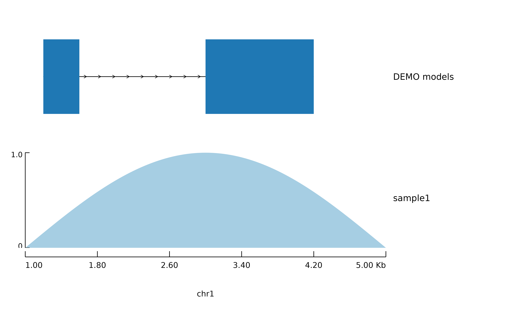

Stacks tracks over a shared coordinate range, with titles down the right and
an axis at top or bottom. This is the browser-style view of a locus, as
opposed to the splicing-focused view plot_sashimi() gives.
Usage
plot_tracks(
x = NULL,
tracks = NULL,
region = NULL,
locus = NULL,
axis = c("bottom", "top", "none"),
palette = NULL,
title = NULL,
title_width = 0.24,
left_pad = 0.05,
base_size = 9,
base_family = "",
hairline = 0.3,
shrink = FALSE,
shrink_method = "power",
shrink_gamma = 0.7,
chrom_style = "keep",
theme = NULL
)Arguments
- x
A
sashimi_dataobject, orNULLwhentracksis given.- tracks
A list of tracks from
track_models(),track_coverage(),track_features(),track_axis()andtrack_spacer(). Built fromxwhenNULL.- region
The coordinate range, as a region string or a
parse_region()object. Taken fromxwhenNULL.- locus
When
xholds several loci, which one to draw.- axis
"bottom","top"or"none"; ignored whentracksalready contains an axis.- palette
Palette for the per-group coverage tracks.
- title
Figure title.
- title_width
Fraction of the figure width reserved for track titles.
- left_pad
Fraction of the width reserved at the left for the coverage range labels.
- base_size
Base font size in points.
- base_family
Font family for every piece of text in the figure. The empty string uses the graphics device's default. Text geoms do not inherit a theme's family, so this is threaded to each of them explicitly.
- hairline
Line width for rules.
- shrink
Compress introns;
TRUE, or anintron_map().- shrink_method, shrink_gamma
Compression rule and its exponent.
- chrom_style
How the contig name is printed:
"keep","ucsc"or"ensembl".- theme
A ggplot2 theme, or
NULLfortheme_omakase().
Details
Called on a sashimi_data object with no tracks argument, it builds a
sensible default stack: one model track, one coverage track per group, a
feature track if the object has features, and an axis. Pass tracks to take
full control.
Examples
sd <- sashimi_data(
loci = data.frame(locus_id = "a", gene_name = "DEMO", chrom = "chr1",
strand = "+", win_lo = 1000, win_hi = 5000),
tracks = data.frame(locus_id = "a", group = "sample1",
pos = seq(1000, 5000, 40),
value = abs(sin(seq(0, pi, length.out = 101)))),
models = data.frame(locus_id = "a", tx_id = "tx1", role = "main",
feature = "CDS",
start = c(1200, 3000), end = c(1600, 4200))
)
plot_tracks(sd)
